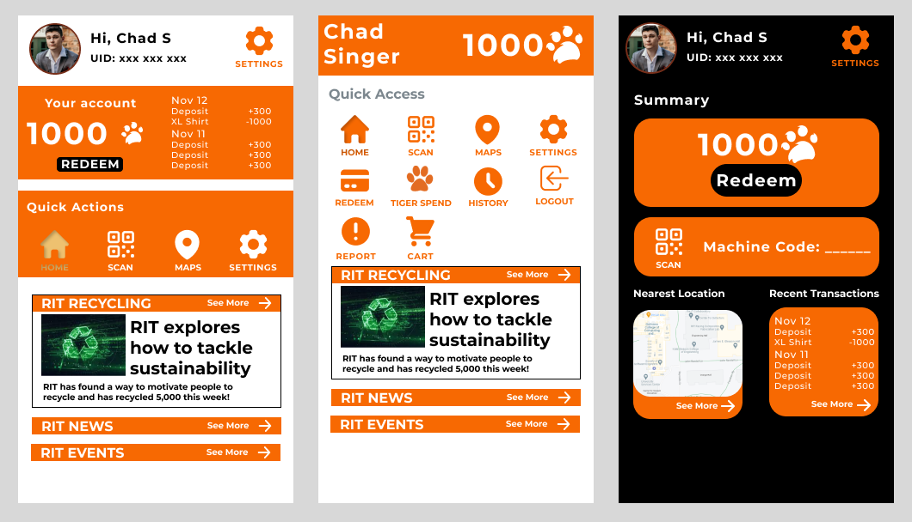

Updated task flow structure
Exploratory Comps
Pick a screen view, and visually explore it in a high level of detail so it looks like a screen grab of the real thing. Use real content to form headlines, body copy, and imagery and explore 3 different stylistic approaches. This is your change to stop being analytical and get visual. Go wild, and have fun with this.
Emotional Guidewords Moodbboards
Wireflow diagram
Machine

Mobile

High-Fidelity Prototypes
Machine
Mobile
Process
Participant |
Upon opening the app - What do you think this app is for?Record answer in its entirety |
How often would you use this app if it was available to you?Narrative: This app is made for recycling and the screen you saw before is to connect to the kiosk by either hovering your phone near the reader like using |
|---|---|---|
| Web and Mobile Sophomore | The app seems to connect to something assuming that the gray box is a camera. Not sure what the maps icon means, I would click it just to see what it is | I probably will only use it if I am passing it on the way. I don’t usually carry disposable empty bottles, because I have my own but if I am in a dining hall I would probably use it most often there |
| Photography Sophomore | The app should connect to something, I’d click home for more information since this screen doesn’t show me much | I probably won’t use this at all. I don’t carry water bottles with me and I live with you so I don’t go to dining halls |
| Computer Science Junior | This seems to be an app built around some kind of scanner, not quite sure for what though. | I’m not on campus that often, so I likely wouldn’t use it that often, but it’d be nice to know. |
| Psychology Junior | The app seems to collect something, with a scan, maybe some kind of geocaching with the map? | I use a reusable water bottle, so I likely wouldn’t need to recycle anything, as I pack my snacks and lunches anyway |
| Humanities, Computing, and Design Junior | It's for a rewards program and is somewhat related to recycling | I will try to use it every day if I'm recycling |
| Anthropology Senior | They understood that it was an app they could connect to a machine. | I think it's a good innovation and helps the environment so much. |
User Testing
Going through the steps of the system, from connecting to redeeming.
Participant |
You have an empty water bottle in your hand, it is raining and you see one of the recycling kiosks that you heard about on your way back from class in Golisano. What would you do? |
(After they connect the device) |
||
|---|---|---|---|---|
| Note what they said they would do as they do it | Note the amount of time it took them to connect | Note the path that they take | Note any mistakes that they click | |
| Web and Mobile Sophomore | I would walk up to the machine and hold my phone near the sensor. (2 seconds connect screen didn’t pop up) > I will probably enter the code manually if the sensor doesn’t work | Took very little time to pull out phone from pocket, held phone near sensor for 2 seconds and didn’t see anything change, went to input code manually *he clicked the ___ in the scan tab | Home > Redeem > Clicked Item Image > Pressed M > Add To Cart > Clicked Cart > Checkout | No mistakes, said it seemed pretty straightforward. Clicked M a few times (most likely habit) |
| Photography Sophomore | I’d walk up to the machine and scan the QR code. Toss it in the bin and leave | “Where’s the QR code?” *taps the screen, scans QR code | Home > Redeem > Add > Pressed L > Add To Cart > Clicked Cart > Checkout | No mistakes, didn’t think too much of it, said it seemed pretty straightforward |
| Computer Science Junior | Scanning the QR code, I’d likely walk up to it and leave after tossing it in the bin | Very little time taken, at most like 3-5 seconds to pull out phone and scan the app | They went from Home to redeem, added to cart, and checked out as per our guidelines. They seemed to have a pretty easy time with it. | Seemed to be pretty straightforward, and they didn’t get lost |
| Psychology Junior | The app seems to collect something, with a scan, maybe some kind of geocaching with the map? | Had a bit of a hiccup finding the QR code, as they were confused about the interface on the actual bin. Otherwise, the actual process took a very short amount of time | Home to Redeem, to Report a problem, then submit | Seemingly no mistakes, seemed to be straightforward |
| Humanities, Computing, and Design Junior | I would try and check it out | 3-5 seconds, the participant had a good grasp of what they needed to do | Home > Redeem > Browse an item> Add to cart > Checkout | No mistake |
| Anthropology Senior | I would still go and try it. It's raining anyway, so I can't go anywhere. Assuming the machine is indoors. | In 5-8 seconds, the participant looked at both screens first and evaluated what they could do. | Home > Redeem > Browse an item> Add to cart > Checkou | No mistake |
Steps to report a problem, both on app and the machine
Participant |
You walk up to the machine and you notice that you cannot connect to the kiosk, what would you do? |
|
|---|---|---|
| Note what they do on the machine | Note what they do on the app | |
| Web and Mobile Sophomore | Clicked report a problem First impression was “oh ok” when the new screen popped up |
Home > scrolled through the entire thing > Maps > Settings > Report a problem > clicked the top two boxes > submit |
| Photography Sophomore | Clicked report a problem | Settings > Report a problem > clicked the top two boxes > submit
Clicked the two boxes more than once, was probably thinking a keyboard would pop up (I didn’t incorporate this) |
| Computer Science Junior | Report seemed to go alright, they clicked the report button, typed in a few things, and reported. | Home > Settings > Report a problem > clicked the top two boxes > submit |
| Psychology Junior | Clicked report a problem | Settings > Report a problem > submit |
| Humanities, Computing, and Design Junior | Walked away | Open the maps and look for a different location |
| Anthropology Senior | They reported it to FMS using the report feature. | They looked for a different location using the map. |
Analyzation and Findings
Ehren:
Should probably add some more direct features, but it also felt like from the general vibe of participants that they wouldn’t likely use it at all, and was confused about the vibe of the app. Further development may want to add more flair to the app to make it better fit a “recycling” theme.
In terms of user error, there wasn’t much. Much of the feedback seemed to show our navigation and actual features were pretty good. Further development would expand on these aspects
Bethany:
Emma:
Henry:
Should probably add a report button to the homescreen due to someone thinking it could be accessed there, alongside an interactive map where they can click the individual kiosks and a small window would pop up with a report button
All tasks were completed quickly, not many misclicks and all participants knew what to do when presented with a narrative and a task